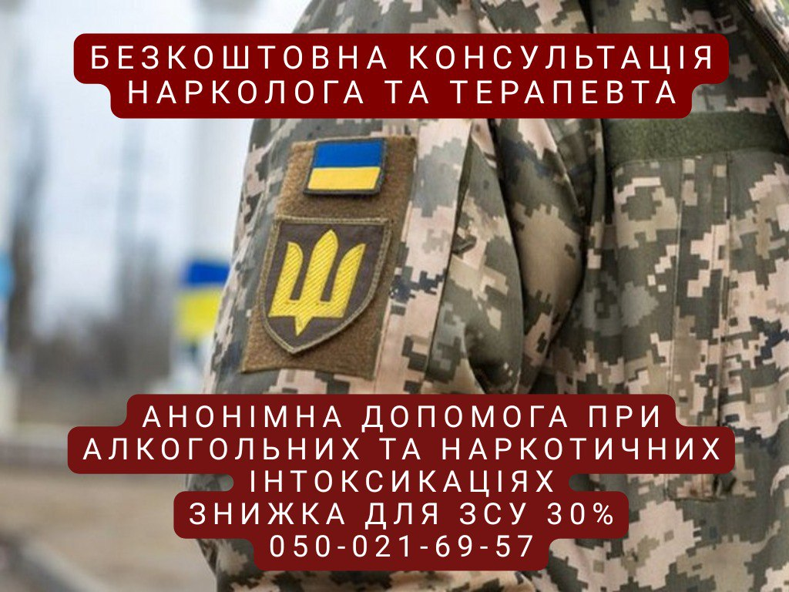
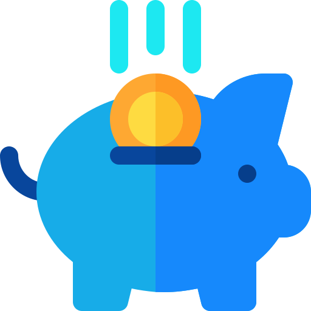
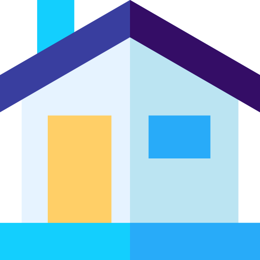

+380(97) 369 76 65
+380(97) 369 76 65Приватний наркологічний медичний центр
Лікування алкоголізму та наркоманії
Зняття
алкогольної/наркотичної інтоксикації
Виїзд нарколога додому


Безкоштовна консультація, працюємо цілодобово 24/7
Лікування алкоголізму та наркоманії
Зняття
алкогольної/наркотичної інтоксикації
Виїзд нарколога додому
Лікування алкогольної та наркотичної залежності - це довгий шлях до
свободі та нового життя. Наша компанія спеціалізується на лікуванні
алкоголізму та наркоманії, виведення із запою, кодування, а також
лікуванні безсоння та тривожних розладів. Ми пропонуємо індивідуальні
схеми лікування, розроблені професійною командою лікарів різних
спеціальностей відповідно до протоколів МОЗ. Наш підхід заснований на
комплексному лікуванні кожного пацієнта та подальшій підтримки на всіх
етапах одужання. Ми віримо, що кожна людина здатний змінити своє життя
на краще.
"Наша головна мета - не просто прокапати пацієнта, а й відновити
його ментальне здоров'я, допомогти подолати труднощі перед
залежністю , повернути радість та сенс життя”
Іванов Святослав В'ячеславович

Натисність на ваше місто
Анонімність
Конфіденційність – наш пріоритет. Ми суворо дотримуємося медичної таємницю та гарантуємо, що ваші дані залишаться в безпеці. Звернувшись до нас, ви можете бути впевнені, що інформація не потрапить до державних реєстрів.
 Професіонали
Професіонали
Ми – досвідчена команда лікарів різних спеціальностей, які постійно підвищують свою кваліфікацію. Наші лікарі – справжні професіонали, готові допомогти у будь-якій ситуації.
 Доступні ціни
Ми розуміємо складну економічну ситуацію в країні та прагнемо зробити наші послуги доступними. Високий попит дозволяє нам пропонувати ціни нижче за ринкові. Для військовослужбовців та їхніх сімей передбачені знижки.
 Виїзд на будинок
Наш лікар прибуде до вас протягом 60 хвилин після дзвінка. на екстрені виклики виїжджають лише фахівці – реаніматологи, наркологи чи лікарі невідкладних станів. Ми надаємо якісну допомогу, і наші лікарі завжди мають при собі все необхідні медикаменти.
Виїзд лікаря до пацієнта додому починається з вашого дзвінка до нас.
Пацієнт або його близький родич контактує з черговим лікарем та
обговорює час візиту. Лікар проводить аналіз стану пацієнта, виявляє
ступінь залежності та оцінює потребу в лікуванні.
У день візиту лікар приїжджає до пацієнта додому, проводить
огляд, ставить питання про симптоми та історію вживання алкоголю. На
основі отриманої інформації лікар розробляє індивідуальний план
лікування, пропонує методи справлення з алкогольною залежністю та
призначає відповідні медикаменти.
Лікар також обговорює
реабілітаційні програми та надає пацієнту та його сім'ї рекомендації
щодо ведення здорового способу життя.
Анонимно

"Ну в хлопців просто золоті руки й світла голова, мене капали Олексій та Владислав, буквально за декілька сеансів я наче заново народився, до цього пив більше 3х тижнів, не міг зупинитись, дуже радий що знайшов саме цих спеціалістів, всім рекомендую"
Анонимно
"В течение нескольких лет я злоупотреблял алкоголь, что привело к увольнению с работы и вызвало у меня мысли о суициде. Понимая, что такой образ жизни неприемлем, я обратился за помощью в клинику "Амбрела". Здесь я смог преодолеть свою зависимость от спиртного благодаря заботливым и опытным врачам, а также эффективной системе лечения. Спустя более года я полностью избавился от желания употреблять алкоголь, и теперь моя жизнь вернулась в норму. Я даже не приближаюсь к спиртному! Благодарю врачей клиники "Амбрела" за их помощь и заботу."
Анонимно
"Я обращался за помощью в различные клиники, пытаясь избавиться от своей зависимости от алкоголя, но без особых успехов. Никак не мог справиться с желанием прибегнуть к бутылке, пока друг не посоветовал мне обратиться в центр "Амбрелла". Я записался на прием и был поражен заботливым отношением к пациентам. Уже прошло два года, и теперь я смотрю на алкоголь с абсолютной равнодушием, активно занимаюсь спортом и улучшил отношения в семье. Благодаря центру "Амбрелла" моя жизнь была спасена от алкогольной зависимости!"
Анонимно
"Хочу выразить свою благодарность врачам из центра алкоголизма "Амбрела" за то, что они буквально спасли мою жизнь. В течение последнего года я сильно увлекался питьем, и все это привело к катастрофическим последствиям. Хотя я ходил на терапевтические сеансы, но безрезультатно. Тогда я нашел адрес клиники "Амбрела" в интернете, изучил отзывы и информацию о центре, и записался на прием. Там мне сразу предложили методику лечения, которая помогла не только справиться с физической ломкой, но и психической зависимостью от алкоголя. Не буду распространяться, скажу только одно - после пребывания в этой клинике я стал другим человеком, и навсегда забыл, что такое привкус алкоголя. Больше меня не тянет на это! Я искренне верю, что в центре "Амбрела" трудятся настоящие целители душ!"
Анонимно
"После сложного развода мой сын начал подавлять свою обиду и горе употреблением алкоголя. Он старался скрывать это от меня, но я, как мать, почувствовала, что что-то не так. В конечном итоге, ситуация стала критической. Моя знакомая посоветовала мне обратиться в клинику "Амбрела". Я была приятно удивлена их работой! Они помогли сыну преодолеть очередной период злоупотребления алкоголем, и с тех пор прошел уже более года, и он совсем не пьет."
Анонимно
"Благодаря вашей помощи, моя семья была спасена. Я с трудом уговорила мужа начать лечение, и последний каплей был пьяное ДТП. К счастью, в аварии никто не пострадал, но это был для него сигнал к действию. Он наконец согласился пройти курс лечения на дому, в стационар не хотел ложиться. Лечение было трудным, и были моменты, когда срыв был настолько близок, но благодаря вашему центру Амбрелла мы справились с этим."
Анонимно
"Для меня эта клиника стала настоящим спасением! Долгое время я упорно отказывался от лечения, уверен был, что со мной все в порядке. Но к счастью, семья уговорила меня попробовать. И сегодня я чувствую себя невероятно счастливым, осознавая, что мне абсолютно не нужен алкоголь. Огромное спасибо за помощь и поддержку, которые я получил здесь! Я благодарен вам за новую возможность жить полноценной и счастливой жизнью!"
Анонимно
"Выражаю благодарность ребятам, которые оказали мне помощь и не отвернулись. Уже 10 месяцев я остаюсь чистой. Благодарю за то, что помогли найти новый путь в моей жизни."
Номер телефону:
+380 (97) 369 76 65
+380 (50) 021 69 57
Адреса головного офісу: м. Харків вул. Сумська 47
Офіс вашого міста
потрібно уточнити
Працюємо у: Одесі, Києві, Львові, Харкові, Дніпрі,
Запоріжжя
Telegram: t.me/umbrellaplus
Графік роботи: Цілодобово